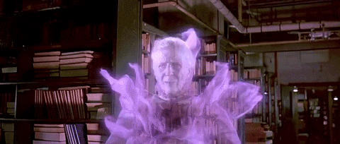

21F4F I'm in the uni library.. : dirtypenpals
www.reddit.com/.../21f4f_im_in_the_uni_library
I'm really mostly looking for a chat right now :) So if you are free.. Ohh and being in the uni library makes anything else than chatting rather.. uhmm... difficult :p But i
guess that it would be a really great opportunity to tease me for the ones who like that.
Blasting INAPPROPRIATE Songs in the Library PRANK #2 - YouTube
www.youtube.com/watch?v=OoHkyYX4n50
Nov 03, 2017 · If you want us to do another one send us a DM on Instagram! We're not sure how much longer we can get away with these lol, but anything for you guys! #servesquad
Songs used (in order): 1. https ...
Eating Loud in the LIBRARY! - YouTube
www.youtube.com/watch?v=fxOjfHFe1xY
Dec 02, 2015 · We went to eat food Loudly in the Library. We were hungry. Extras & Reveals Here! https://goo.gl/W9tXzM Behind the Scenes Vlog!! Watch this next: https:/...
Loud Eating in the Library! - YouTube
www.youtube.com/watch?v=mPh9JZlVUK0
Sep 24, 2014 · Blasting Embarrassing Songs in Other People's Backpacks in the Library -
Duration: 5:00. RohanTV 2,901,069 views. 5:00. Asking Dumb Questions in a Harvard Lecture -
Duration: 6:08.
Also Try
i'm in the lib lyrics i'm in the lib full